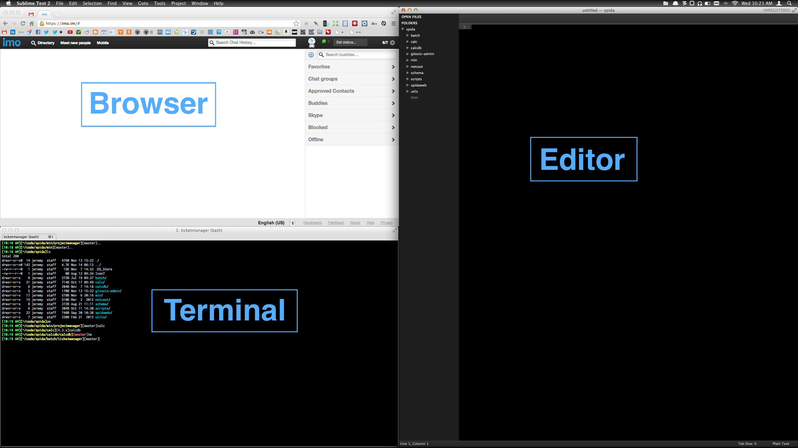
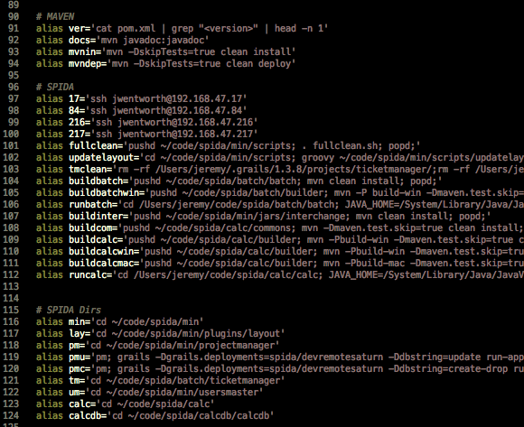
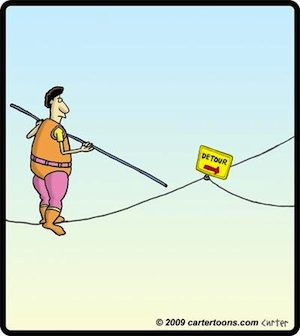
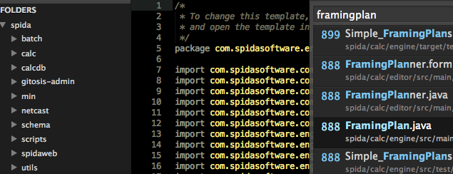
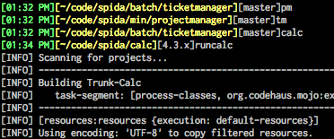
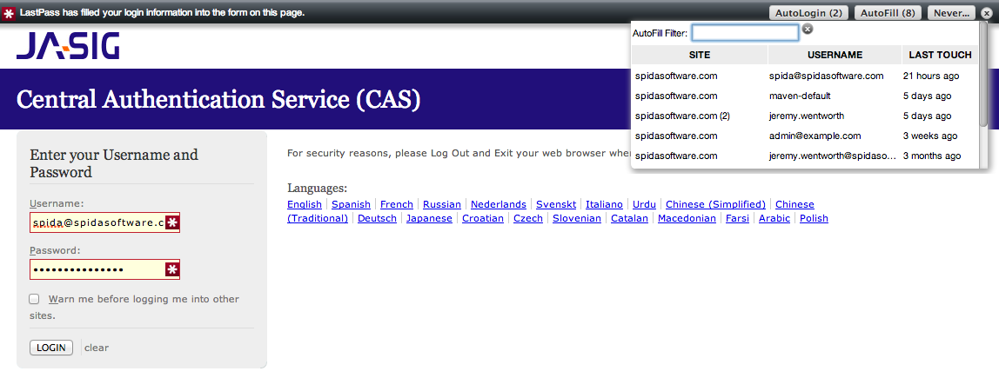
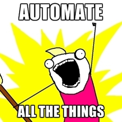
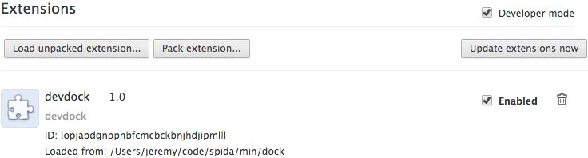
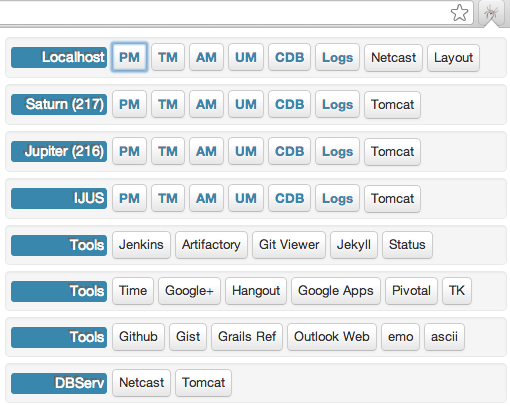
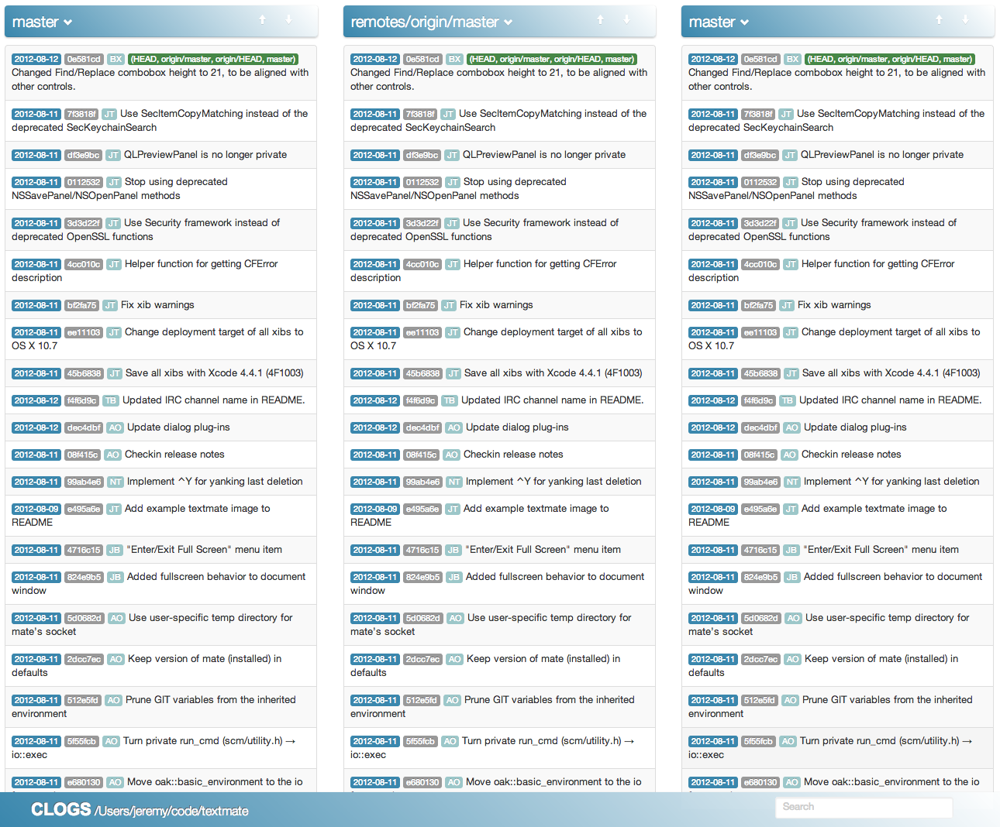

Make Your Job Easy on Yourself!
Created by Jeremy Wentworth using reveal.js
Disclaimer:

- This is what works for me.
- Use whatever works for you.
DRY Applies to using tools, too!
- Paul Irish
Source: Javascript Development Workflow of 2013 (Video)
Anything that's tedious is repeatable; anything that's repeatable should be done by a computer.-Robert Muller?
(I don't know. Found it on the internets)
My Daily Workflow

Some of my Aliases


What do you do if an urgent issue comes up that is unrelated to what you are working on?
Be ready and able to
Switch Contexts Quickly
- Use editor keyboard shortcuts to:
- search for files quickly
- search for text quickly
- Use Aliases/Batch files to:
- jump to frequently used directories
- build, test, run complex projects
For example, a calc issue comes up but i am working on min.
- Command + p to open file search (I always have every spida project open)
 - Make a change.
- Use terminal aliases to Build, Test, and Run calc
 - I type "pm" at terminal and get back to work
Pick tools that can move quickly with you:
- For you, an IDE might make you faster.
- For me, a terminal & a text editor allow me to switch contexts quicker than any IDE I have tried.
First, try existing tools.
Lastpass

Source: lastpass.com
Live Reload
A happy land where browsers don't need a Refresh button
Waits for file changes and then:
- if css or image changes, only the resource is reloaded
- if html changes, the browser refreshes
- preprocesses LESS, CoffeeScript, and more...
(In chrome extension settings, check "Allow access to file URLs")
Source: livereload.com
Places I Find Tools
Or, Create your own Tools
Don't repeat yourself. Automate yourself.

If it sucks, automate the suck out of it.
Make Browser Extensions

min/dock
so many spida links...

Bookmarklets
DO NOT TRY THIS AT HOME (this enters my time for me)
window.alert = function() {}; //disable alert
$("#groupId").val("28601");//SPIDA
$("#task").val("8a8b8f3525459ded01254685162c0025");//404 - Development
$("#clientNumber").val("SPIDAMin2.0");
$("#noHrs").val("8");
$("#noPoles").val("0");
$("#timeReportUpdate").attr("disabled",false).removeClass("disable");
var dayCount = 0;
var currentDate = getPrevMondayDate();
var inter = setInterval(function(){
$("#dateEntered").val(getDateString(currentDate));
$("#timeReportAdd").attr("disabled",false).removeClass("disable").click();
currentDate.setDate(currentDate.getDate() + 1);
dayCount++;
if(dayCount==5)clearInterval(inter);
},1000);
Full Source bookmarklet-tr.js
Learn something new.

Full Source clogs
If you make your job easier, you make everybody's job easier
- Share Scripts & Config
- any os: Groovy, Ruby, Maven, Ant
- *nix: dot files, bash scripts
- win: bat files, autohotkey files
- Why did I make this stupid presentation?
- Step 1: Make each other faster.
- Step 2: ?
- Step 3: Profit!!!
What I have learned about Chrome Dev Tools
DEMO
Console
- Last 5 Inspected Items:
$0, $1, $2, $3, $4 - Selector Without Jquery:
$$('#aDiv'); - Put text or html on the clipboard
copy("really long string"); copy($$('#aDiv')); - Monitor Events in Realtime at an Element:
monitorEvents($$('#aDiv'));
monitorEvents($$('#aDiv'),'mouse');
monitorEvents($$('#aDiv'),'key');Logging
- Time Stuff
console.time("slowThing1");
console.timeEnd("slowThing1");
console.log("thing = %o",window.location);console.log("%cYAY!", "color: pink; font-size:300px;");console.group("section 1");
console.log("in group");
console.groupEnd();
console.log("out of group");
Elements
- Drag & Delete Nodes
- Command/Ctrl + z to Undo
- Color Picker
- Autocomplete CSS and JS
Network
- Monitor AJAX Request & Respons
- Websockets - http://www.websocket.org/echo.html
Sources
- Breakpoints
- Watch
- Events
Timeline
- Speed
- Memory
Options
- Log XHR
- Preserve the Log
- Change Frame Context
- Change Page Context
- Cog Wheel
- Source Maps (More Info)
Web Links
- Devtools Cheat Sheet
- Paul Irish - Google Web Developer Advocate
- Paul Irish on Youtube - Just watch every video
- Ilya Grigorik - Google Web Developer Advocate
Shell Links
- ss64.com - command line reference for any OS or DB
- dotfiles.github.com - example dot files
- commandlinefu.com - helpful one-liners
THE END
\o/